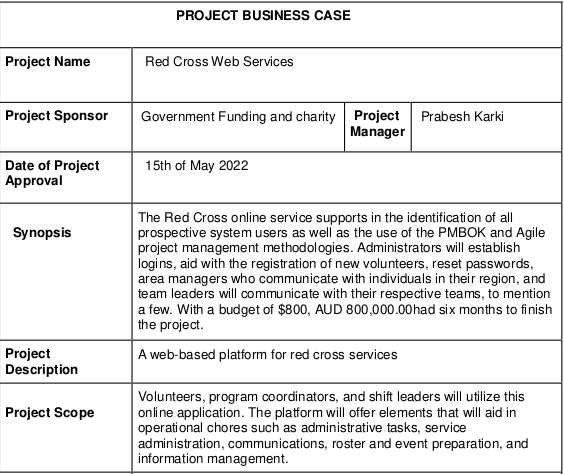

IT Project Management
An IT project management is the process of planning, executing and deploying project responsibilities around an organization's information technology goals.Presented by
Arun Poudyal - 12100089Prabesh Karki - 12100436
Powered by reveal.jsIntro
In this project the Red Cross Web Service is providing information and assigning roles in order to make the most of opportunity to help communities in need.
We adapt and make use of methodologies like PMBOK and Agile methodology.
The project was built focusing on the workflow structure with applications like Slack and Trello. Project was conducted with planning, management and budget calculations along with the help of diagrams for the agile procedure.
PMBOK relies very heavily on a checklist of things to consider in almost every conceivable project management situation. Agile relies more heavily on intuitive knowledge which is know-how on principles like context, experience, practice, and values depending upon situations.
PMBOK
⊳ It is a framework of standards, conventions, processes, best practices, terminologies, and guidelines that are accepted as project management industry standards like IEEE and ANSI.
⊳ The PMBOK framework doesn't dictate methodology, so many software project managers associate it with the Waterfall model.
⊳ The PMBOK are used for best project management techniques and disciplines to ensure that projects are completed with the requisite efficiency, timeliness, and cost.
PMBOK Business Case
PMBOK Business Case

PMBOK Business Case

PMBOK Business Case

Project Plan Structure

Project Stakeholders

Work Breakdown Structure { WBS }
⊳ The Work Breakdown Structure is the tool that utilizes this technique and is one of the most important project management documents. It singlehandedly integrates scope, cost and schedule baselines ensuring that project plans are in alignment.
⊳ There are two types of WBS 1) Deliverable-Based 2) Phase-Based
⊳ A good WBS is simply one that makes the project more manageable. Every project is different; every project manager is different and every WBS is different.
Work Breakdown Structure

Work Breakdown Structure

Work Breakdown Structure

Work Breakdown Structure

Gantt Chart

Gantt Chart
⊳ Gantt graph is a visual portrayal of errands that are arranged throughout some time frame.
⊳ It keeps track of what exercises are arranged and when they will start and stop. It additionally shows exercises that cross over and the term of the whole venture.
⊳ A Gantt outline has been made for careful analysis of the Work Breakdown Structure shown previously.
Agile Methodology
⊳ An agile methodology is a form of project management approach that is mostly utilized in the software development process, where these systems grow the solution through collaboration between self-organizing and cross-functional teams as well as their clients.
⊳ Members of the project team might become secondary decision-makers using an agile approach. As a result, project team members will be able to focus on tasks that are broken into smaller stages.
⊳ Customer satisfaction by rapid, continuous delivery of useful software. People and interactions are emphasized rather than process and tools.
Agile Users Info

Agile Users Info

Agile Users Stories

Agile Users Stories

Agile Users Stories

Agile Implementation
⊳ For agile methodology we use team tools like slack and sprint technology trello.


Trello Work Board Backlog

Trello Sprint Workflow

Trello Sprint Workflow

Trello Sprint Workflow

Trello Sprint Workflow

Trello Sprint Workflow

Trello Sprint Workflow

Trello Sprint Description

Agile and Prince 2

Agile and Price2
⊳ Agile is a project management methodology, while PRINCE2 is a project management approach.
⊳ Differences between them 1. PRINCE2 manages the project whereas Agile manages the work. 2. While PRINCE2 focuses on business objectives, Agile prioritizes most custom needs. 3. While PRINCE2 focuses on planning, Agile focuses on delivering results. 4. PRINCE2 is a predictive framework, while Agile is a flexible framework. 5. Whereas PRINCE2 has seven principles, Agile has twelve. 6. Agile emphasizes team self-organization, whereas PRINCE2 does not. 7. Agile is more adaptable to change than PRINCE2. 8. Scrum employs sprints, whereas PRINCE2 uses work packages.
Workplace Ethics
⊳ Showcase Yourself
⊳ Actively Reinforce Ethics with Resources
⊳ Employees should be asked to create a personal code
⊳ Recognize and reward ethical conduct
THE END